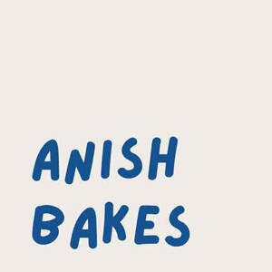

Trade Mark Journal No.2025/042 17 October 2025
UK00004273752 5 October 2025 (30,43)

- Class 30
- Snack food products made from soya flour; Snack food products made from potato flour; Chocolate food beverages not being dairy-based or vegetable based; Foods produced from baked cereals; Snack food products made from rusk flour; Mixes of sweet adzuki-bean jelly [mizu-yokan-no-moto]; Snack food products made from maize flour; Snack food products made from cereals; Stir fried rice cake [topokki]; Chocolate-based fillings for cakes and pies; Multigrain-based snack foods; Custards [baked desserts]; Prepared desserts [chocolate based]; Prepared desserts [pastries]; Beverages made with chocolate; Beverages made from chocolate; Chocolate syrups for the preparation of chocolate based beverages; Prepared desserts [confectionery]; Snack foods made from cereals; Cereal-based savoury snacks; Foodstuffs made of sugar for sweetening desserts; Snack foods made from corn; Snack foods made of whole wheat; Prepared cocoa and cocoa-based beverages; Chocolate fillings for bakery products; Chocolate-based beverages with milk; Snack foods made from corn and in the form of puffs; Foodstuffs made of sugar for making a dessert; Custard-based fillings for cakes and pies; Foodstuffs made of a sweetener for making a dessert; Savory pastries; Cereal snack foods flavoured with cheese; Snack foods consisting principally of bread; Foodstuffs made of a sweetener for sweetening desserts; Beverages made from cocoa; Corn-based savoury snacks; Fruit filled pastry products; Flavourings of almond for food or beverages; Non-medicated flour confectionery coated with chocolate; Chocolate-based beverages; Beverages (Chocolate-based -); Biscuits containing chocolate flavoured ingredients.
- Class 43
- Take-away food and drink services; Catering services for the provision of food and drink; Takeaway food and drink services; Services for the preparation of food and drink; Food and drink preparation services; Providing food and drink catering services for exhibition facilities; Catering for the provision of food and drink; Services for providing food and drink; Take-away food services; Takeaway food services; Providing food and drink catering services for convention facilities; Catering for the provision of food and beverages; Providing food and drink catering services for fair and exhibition facilities; Services for the provision of food and drink; Catering (Food and drink -); Food and drink catering; Catering of food and drink; Catering of food and drinks; Restaurant services for the provision of fast food; Catering services for the provision of food; Provision of food and drink in restaurants; Food and drink catering for institutions; Club services for the provision of food and drink; Providing food and drink for guests in restaurants; Consultancy services in the field of food and drink catering; Food preparation services; Hospitality services [food and drink]; Take-away fast food services; Providing food and drink in Internet cafes; Preparation and provision of food and drink for immediate consumption; Providing food and drink; Providing of food and drink; Food reviewing services [provision of information about food and drinks]; Providing food and drink in doughnut shops; Take-away restaurant services; Providing food and drink for guests; Providing food and drink in restaurants and bars; Providing food and drink in bistros; Providing food and beverages; Services for providing food; Serving food and drink for guests in restaurants; Serving food and drink in Internet cafes; Provision of food and drink; Provision of food and beverages; Food and drink catering for banquets; Preparation of food and drink; Take away food and drink services; Preparation of food and beverages; Night club services [provision of food]; Information, advice and reservation services for the provision of food and drink; Serving food and drinks; Take-out restaurant services; Serving food and drink in doughnut shops; Providing of food and drink via a mobile truck; Corporate hospitality (provision of food and drink); Providing restaurant services; Serving food and drink for guests; Serving food and drink in restaurants and bars; Providing drink services; Services for providing drink; Restaurant services; Food and drink catering for cocktail parties; Fast-food restaurant services; Contract food services; Supplying of meals for immediate consumption; Self-service restaurant services; Food preparation; Take away food services; Preparation of Spanish food for immediate consumption; Catering services for providing Spanish cuisine; Cafe services; Takeaway services; Bar and restaurant services; Restaurant and bar services; Consultancy services relating to food; Arranging of wedding receptions [food and drink]; Restaurant services incorporating licensed bar facilities; Catering services for company cafeterias; Mobile restaurant services; Hotel catering services.
Umesh Patel
Anish Patel